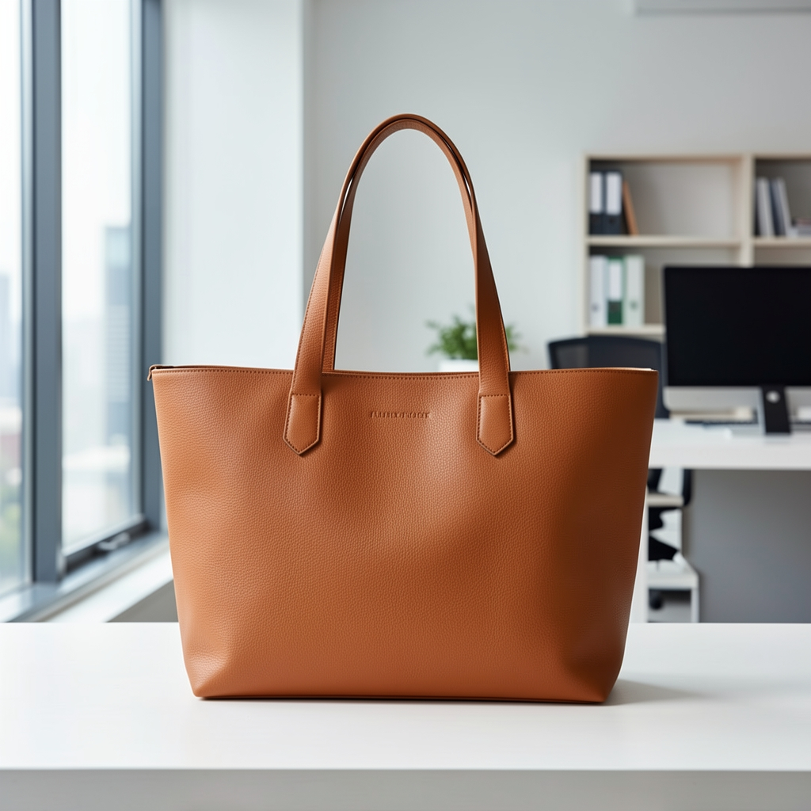

El bolso que me compré cuando me ascendieron a directora
Era un bolso grande, de señora grande, de esos que ocupan medio armario. Lo compré el mismo día que me llamaron a la oficina del CEO.

El bolso
Entré en la tienda de lujo de Gran Vía, la de las mujeres que ya no necesitan demostrar nada. Pedí el bolso más grande que tenían. El dependiente me lo trajo envuelto en papel de seda y yo lo toqué como se toca algo que uno sabe suyo antes de pagarlo.
Tote de cuero grueso, herrajes dorados, forro que huele a tienda seria. Cabe el portátil, el neceser, una carpeta entera con los informes del trimestre. Y sobra sitio, que era justo lo que quería: sitio para todo lo que venía.
Mi historia
Ese mismo día me habían comunicado el ascenso. Tres años pidiéndolo. Tres años viendo pasar el puesto por delante de mí en manos de hombres que llegaban más tarde y se marchaban antes. Cuando colgué el teléfono salí a la calle y no lloré. Fui directa a la tienda.
Lo llevé a la oficina a la mañana siguiente y lo dejé sobre la mesa en la primera reunión. No para presumir. Para que ocupara el lugar que le correspondía — al bolso y a mí.
No pedí un ascenso durante tres años por un bolso. Lo pedí porque sabía que lo merecía.